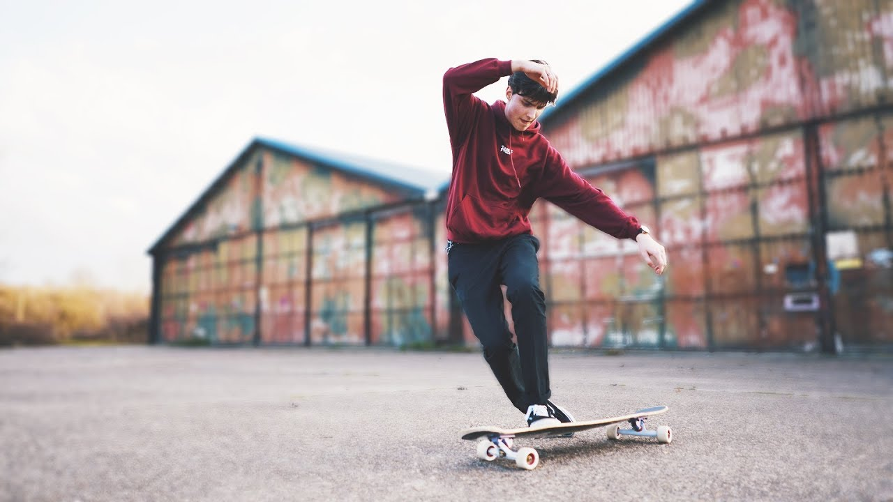
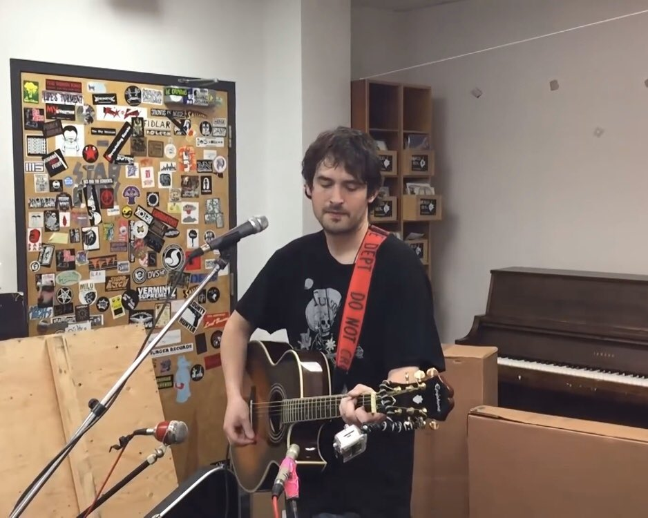

Ki vagyok?
Poncsák Ákosnak hívnak, 22 éves vagyok és Gyömrőn lakom. Szeretek a természetben sétálni és a macskákat. Szabadidőmben szeretek olvasni, rajzolni és festeni.
A kedvenc filmem a Taxi sofőr Robert De Niro-val.

Én és egy barátom
Longboard dancing
Szükségem volt valami mozgással kapcsolatos hobbira és mivel több barátom is deszkázott régen engem is érdekelt a sport.
Az elhatározás az után jött miután megnéztem egy YouTube videót Hans Wouters-től, hogy miért jó a longboard dancing. Kényelmesebb vele közlekedni, mint egy normál gördeszkával és nem annyira veszélyes, ami előny ha laborról nulla hiányzás van előírva.
Hans Wouters
Zene
Amikor éppen nem gépszerkesztés házit csinálok akkor szabadidőmben gitározom. Az első karantén elején kezdtem el zenálni, főleg folk punk és folk számokat játszom.
A kedvenc előadóm Patrick Schneeweis (Johnny Hobo and the Freight Trains, Wingnut Dishwashers Union, Ramshackle Glory), a legtöbb számot tőle játszom, de más folk punk előadók (Just Nick, Erik Petersen, Chris Burrows) számait is játszom néha.
Patrick "The Bunny" Schneeweis